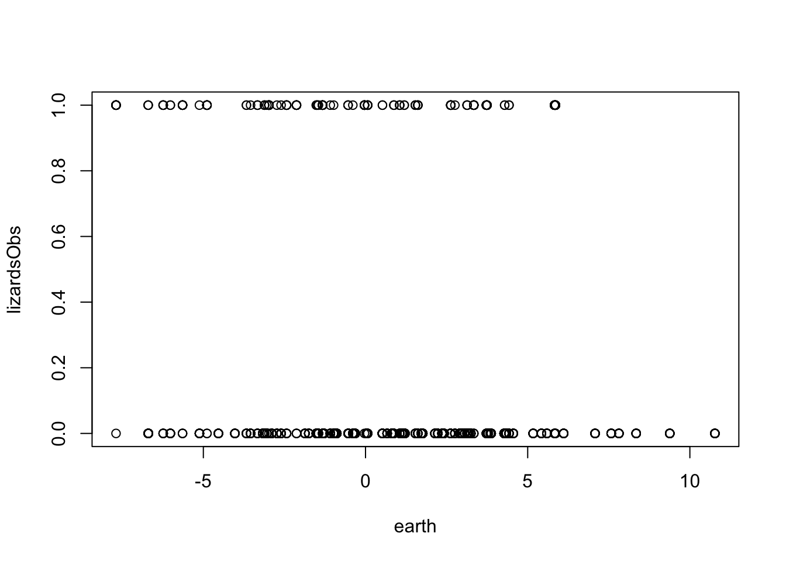
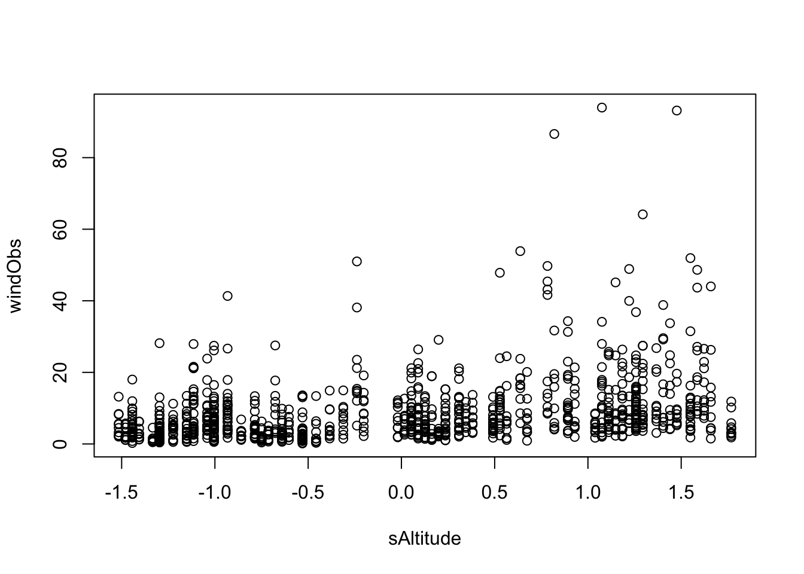
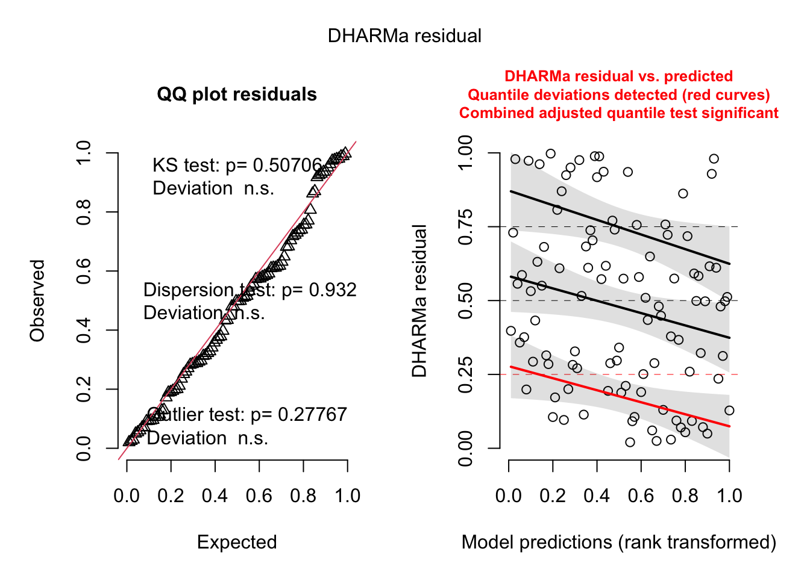
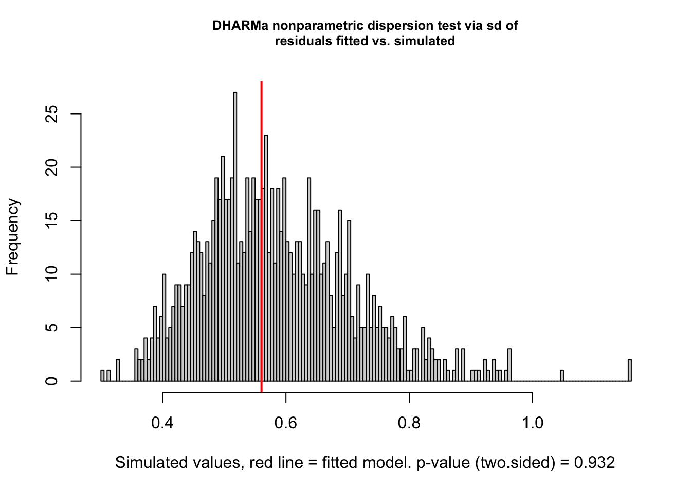
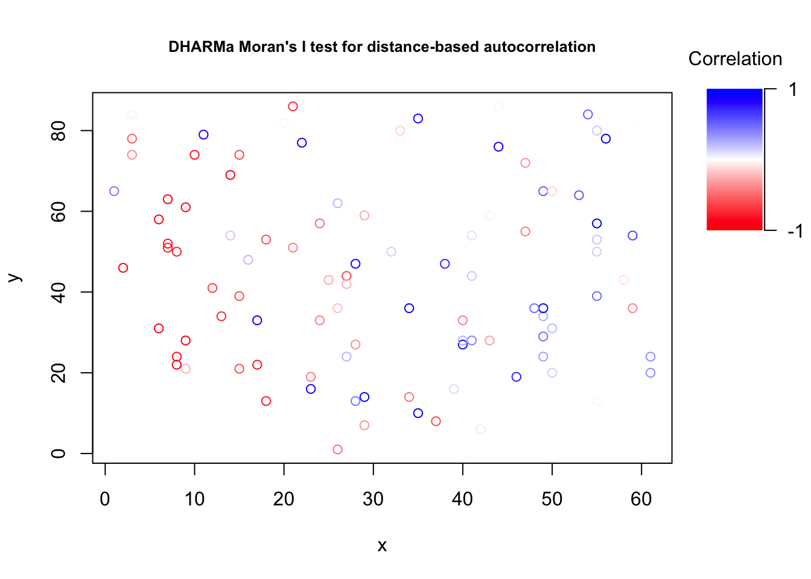

In this chapter, we will discuss occupancy models, which separate the true ecological state (species presence) from imperfect detection. You will learn
Why imperfect detection can bias inference about species-environment relationships if ignored
How to build a Bayesian occupancy model with a latent “true presence” variable in JAGS
How to separate the detection process from the occupancy (ecological) process
How to inspect occupancy probabilities and check model fit with posterior predictions and DHARMa residuals
library(EcoData)library(effects)plot(lizardsObs ~ earth , data = volcanoisland)

fit<-glm(lizardsObs ~ earth + windObs , data = volcanoisland, family = binomial)
Warning: glm.fit: fitted probabilities numerically 0 or 1 occurred
summary(fit)
Call:
glm(formula = lizardsObs ~ earth + windObs, family = binomial,
data = volcanoisland)
Coefficients:
Estimate Std. Error z value Pr(>|z|)
(Intercept) 1.16640 0.21592 5.402 6.59e-08 ***
earth -0.21692 0.02982 -7.273 3.51e-13 ***
windObs -0.61135 0.05763 -10.608 < 2e-16 ***
---
Signif. codes: 0 '***' 0.001 '**' 0.01 '*' 0.05 '.' 0.1 ' ' 1
(Dispersion parameter for binomial family taken to be 1)
Null deviance: 889.22 on 999 degrees of freedom
Residual deviance: 562.65 on 997 degrees of freedom
AIC: 568.65
Number of Fisher Scoring iterations: 8
Suspicion - the lizards actually depend on the altitude, but they don’t like wind and therefore hide when there is a lot of wind, and wind also correlates with altitude.
plot(windObs ~ sAltitude, data = volcanoisland)

Could we find out what’s the true effect of the environmental predictors? let’s build an occupancy model where we model the true presence of the lizard as a latent variable.
Iterations = 1001:6000
Thinning interval = 1
Number of chains = 3
Sample size per chain = 5000
1. Empirical mean and standard deviation for each variable,
plus standard error of the mean:
Mean SD Naive SE Time-series SE
SoilL -0.32114 0.08429 0.0006882 0.001149
altL 0.03802 0.25255 0.0020621 0.003468
intL 0.23821 0.26933 0.0021991 0.003650
intO 5.67849 0.67386 0.0055020 0.040638
windO -4.15487 0.44319 0.0036186 0.027436
2. Quantiles for each variable:
2.5% 25% 50% 75% 97.5%
SoilL -0.4988 -0.3753 -0.31635 -0.2627 -0.1681
altL -0.4579 -0.1306 0.03723 0.2055 0.5391
intL -0.2655 0.0553 0.23082 0.4133 0.7918
intO 4.4444 5.2102 5.64479 6.1279 7.0689
windO -5.0682 -4.4470 -4.13566 -3.8459 -3.3503
dic =dic.samples(jagsModel, n.iter =5000, type ="pD")dic
Mean deviance: 261.2
penalty NaN
Penalized deviance: NaN
Inspecting the occupancy results
para.names <-c("LizzardTrue")Samples <-coda.samples(jagsModel, variable.names = para.names, n.iter =5000)library(BayesianTools)x =getSample(Samples)# there was no Lizard observed on plot 3 on all 10 replicatesvolcanoisland$lizardsObs[21:30]
[1] 0 0 0 0 0 0 0 0 0 0
# Still, occupancy probability that the species is there is 22 percentbarplot(table(x[,3]))
# fix for a bug in DHARMa, will be correctedsim$simulatedResponse =t(x)sim$refit = Fsim$integerResponse = Tres2 =recalculateResiduals(sim, group =as.factor(volcanoisland$plot))plot(res2)

testDispersion(res2)

DHARMa nonparametric dispersion test via sd of residuals fitted vs.
simulated
data: simulationOutput
dispersion = 0.9572, p-value = 0.932
alternative hypothesis: two.sided
x = volcanoisland$x[seq(1, 999, by =10)]y = volcanoisland$y[seq(1, 999, by =10)]testSpatialAutocorrelation(res2, x = x, y = y)

DHARMa Moran's I test for distance-based autocorrelation
data: res2
observed = 0.113018, expected = -0.010101, sd = 0.017234, p-value =
9.071e-13
alternative hypothesis: Distance-based autocorrelation